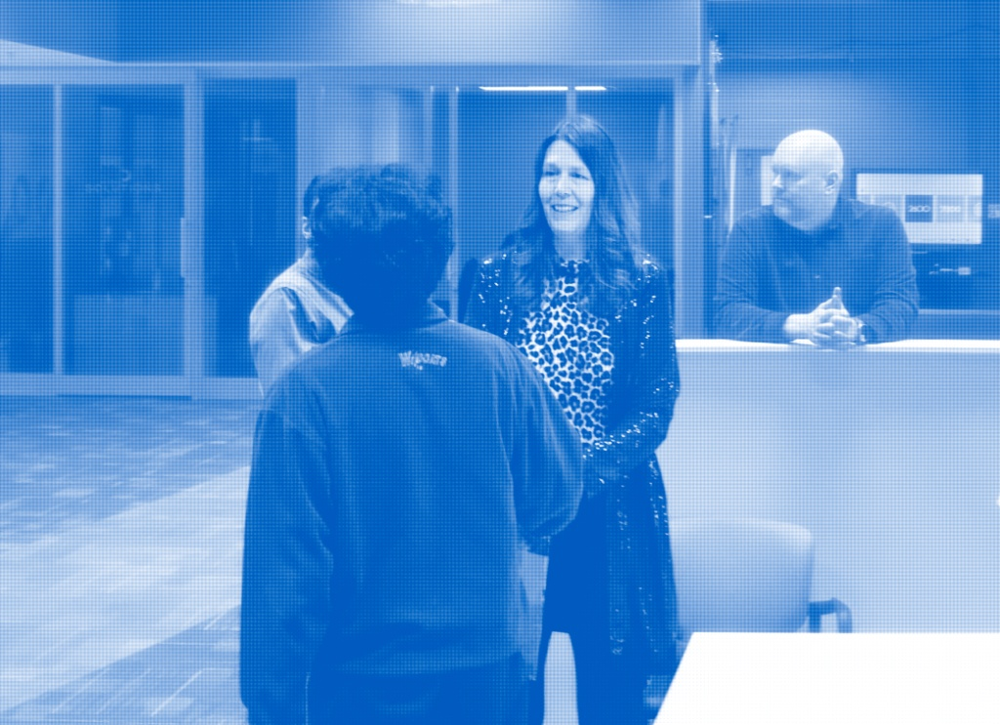
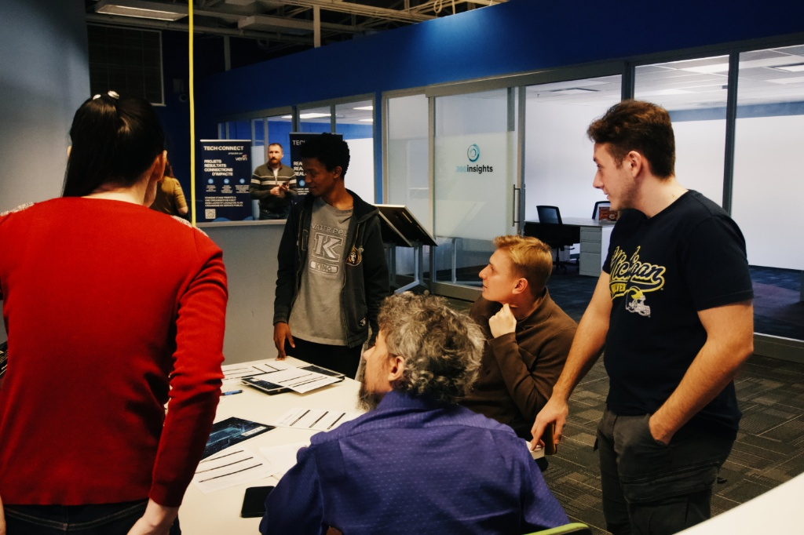
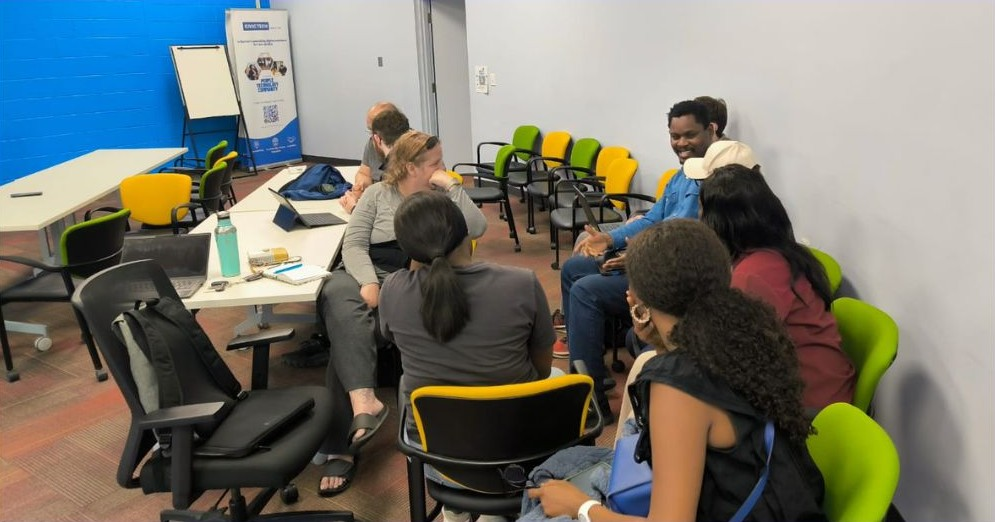
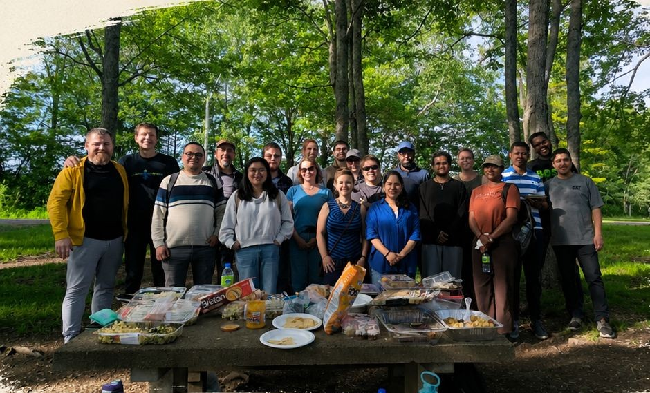

"Connecting passion with technology to solve real community needs, one project at a time."

Whether you are an experienced software engineer, a UI/UX designer, or someone passionate about community development, your voice matters. We work hand-in-hand with local initiatives to deploy tech assets effectively.
Our chapter brings together diverse talent pools to execute civic hacking sprints. We map technology problems discovered in daily municipal environments and craft open solutions that remain accessible to all citizens forever.
We actively bridge the gap between administrative requirements and technical deployment. Volunteers manage containerized applications, local staging nodes, and responsive styling to maintain premium uptime for community tools.
Delivering open digital tools to promote automated community dashboard frameworks.
Working hand-in-hand with civic entities, non-profit groups, and localized chapters to maintain clear data transparency targets.
Building custom config structures under public domain architectures, ensuring software remains unblocked and reusable forever.
Deploying responsive assets that resolve municipal bottlenecks, directly improving tech access across Westmorland county.

6:30 PM - 8:30 PM AT

6:30 PM - 8:30 PM AT

Explore full archives